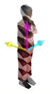
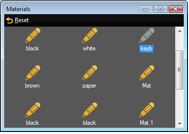

If an object is selected the Materials window shows all used materials (texture images) of the object. Select the material in the Material window and you can change its properties (diffuse color, emissive color, specular power, texture) in the property window. The results can be viewed directly in the Stage View window.
Video file formats for textures
| Format and File Name Extension | Licensing |
|---|---|
| VP8 (.webm) | Not necessary |
| VP9 (.webm) | Not necessary |
| MPEG-2 Elementary Stream (for example .mpv, m2v) | Additional license required |
| MPEG-4 (.avi, .mov) | Additional license required |
Image file formats for textures
| Format and File Name Extension |
|---|
| Bitmap (.bmp) |
| JPG and JPEG (.jpg, .jpeg) |
| CompuServe GIF (.gif) |
| Portable Network Graphics (.png) |
| Tagged Image File Format (.tif, .tiff) |